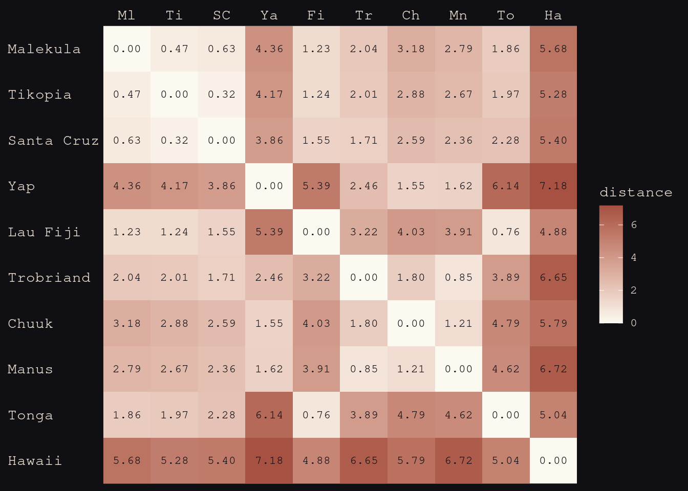
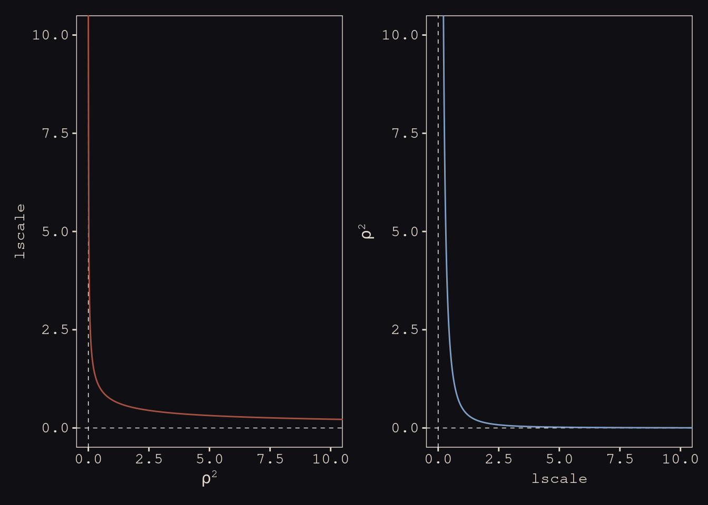
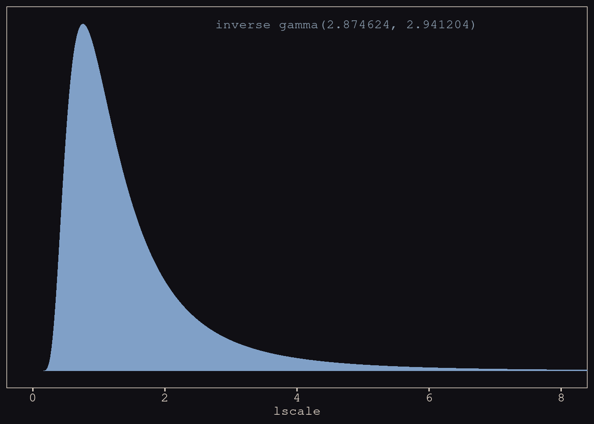
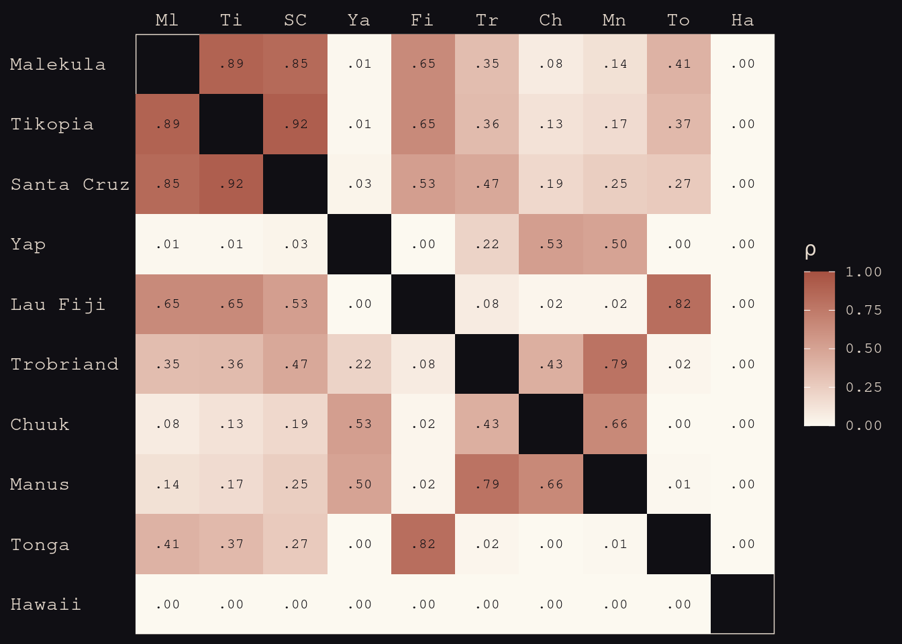
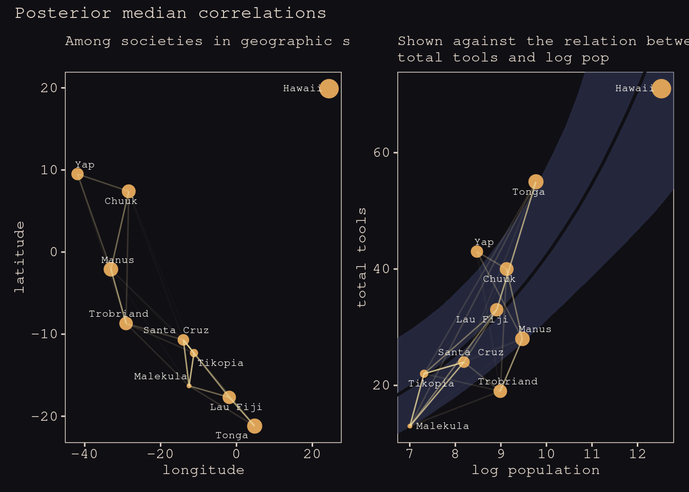
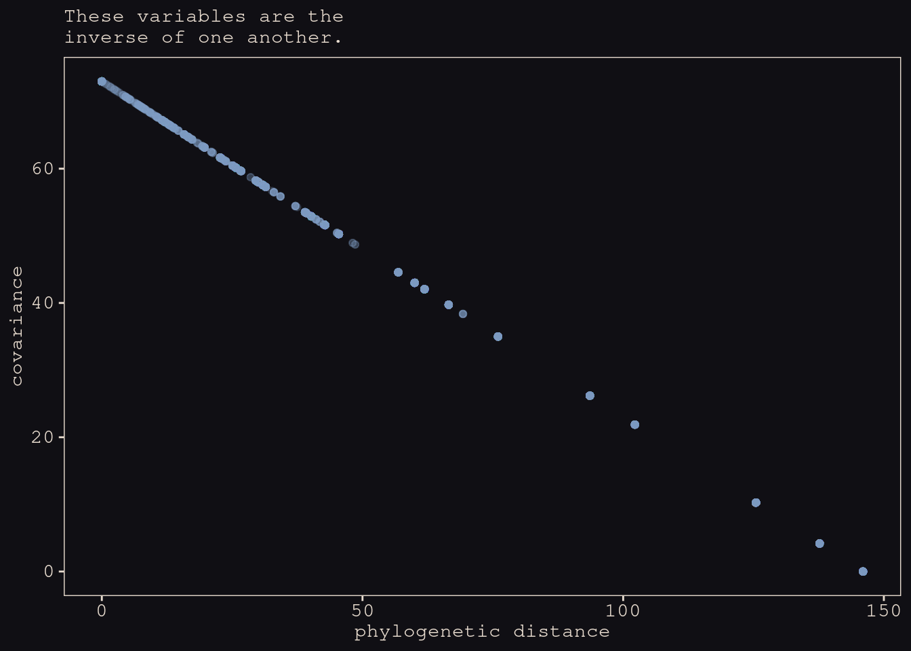
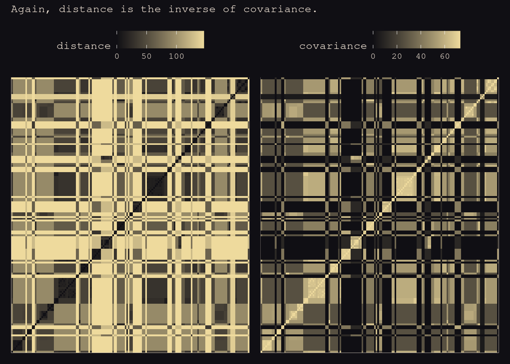

13.5 Continuous categories and the Gaussian process
All of the varying effects so far, whether they were intercepts or slopes, have been defined over discrete, unordered categories. For example, cafés are unique places, and there is no sense in which café 1 comes before café 2.
But what about continuous dimensions of variation like age or income or stature? Individuals of the same age share some of the same exposures. They listened to some of the same music, heard about the same politicians, and experienced the same weather events. And individuals of similar ages also experienced some of these same exposures, but to a lesser extent than individuals of the same age.
It doesn’t make sense to estimate a unique varying intercept for all individuals of the same age, ignoring the fact that individuals of similar ages should have more similar intercepts.
Luckily, there is a way to apply the varying effects approach to continuous categories of this kind. This will allow us to estimate a unique intercept (or slope) for any age, while still regarding age as a continuous dimension in which similar ages have more similar intercepts (or slopes). The general approach is known as GAUSSIAN PROCESS REGRESSION.
Get to take everything we’ve learned and put it together.
![Data story. General phenomoent that doesn't just applhy to American politics. Birth year of voters. On the veritcal we have the Republican vote share of individuals in that birth year. Share of the vote they have to the presidential candidates in that year. Each of the colours is a different election year. As you get closer to the present, younger people are allowed to vote, so you can seee the curves are shifting to the left. If you plotted this graph by age, you would see this view. Interesting view that the hills and valleys line up, even though in any particular year it can move up and down quite a lot. 2008 is much lower down across all age groups. Bu tthe peaks and valleys are in teh same place. These are cohort effecs. Something abou thteh year you're born in sets your politial preference for live. It's something that heppns to people born around that time that happens in their life.](slides/L19/02.png)
Data story. General phenomoent that doesn’t just applhy to American politics. Birth year of voters. On the veritcal we have the Republican vote share of individuals in that birth year. Share of the vote they have to the presidential candidates in that year. Each of the colours is a different election year. As you get closer to the present, younger people are allowed to vote, so you can seee the curves are shifting to the left. If you plotted this graph by age, you would see this view. Interesting view that the hills and valleys line up, even though in any particular year it can move up and down quite a lot. 2008 is much lower down across all age groups. Bu tthe peaks and valleys are in teh same place. These are cohort effecs. Something abou thteh year you’re born in sets your politial preference for live. It’s something that heppns to people born around that time that happens in their life.
![They fit a bit heirarchical Bayesian model to find the age it is that sets their poltical orientation. What matters is that when your're 18, who is present, what party theyr'e from, and are they popular. THen you can predict their political orientation for the rest of their life. Things that happen when you're older don't have nearly as much of an effect. Year of birth is linear, but also a category. It's an orderd category. If we can to take effects like this seriously, we need to take them into account. Called continuous cateogries. Trough in 1950 is the Nixon effect. Most conservative is the Reagan effect. He was winnign the Cold War.](slides/L19/03.png)
They fit a bit heirarchical Bayesian model to find the age it is that sets their poltical orientation. What matters is that when your’re 18, who is present, what party theyr’e from, and are they popular. THen you can predict their political orientation for the rest of their life. Things that happen when you’re older don’t have nearly as much of an effect. Year of birth is linear, but also a category. It’s an orderd category. If we can to take effects like this seriously, we need to take them into account. Called continuous cateogries. Trough in 1950 is the Nixon effect. Most conservative is the Reagan effect. He was winnign the Cold War.
![You can assert that they have linear effects, but then you're giving up on thise non-monotonic cohort effects. Or ny number of other interesting things as well, like income. No reaon that every paddditnoal percent of income has the same effect. How is location a category? It's a proxy of things you haven't measured. Location is a proxy for common exposures. Phylogentic distance analagous to location. No obvious cutpoints, but similar values are similar in their effects. If you want an infinite number of categories, buecasue it's continuous, you want pooling. So we'll make models with infiinte cateogories, and fit arbitrary function swith pooling, and it'll work great. In machine learning is Gaussain process regression.](slides/L19/04.png)
You can assert that they have linear effects, but then you’re giving up on thise non-monotonic cohort effects. Or ny number of other interesting things as well, like income. No reaon that every paddditnoal percent of income has the same effect. How is location a category? It’s a proxy of things you haven’t measured. Location is a proxy for common exposures. Phylogentic distance analagous to location. No obvious cutpoints, but similar values are similar in their effects. If you want an infinite number of categories, buecasue it’s continuous, you want pooling. So we’ll make models with infiinte cateogories, and fit arbitrary function swith pooling, and it’ll work great. In machine learning is Gaussain process regression.
14.5.1. Example: Spatial autocorrelation in Oceanic tools
Two examples with code on how to do this. First is with spatial autocorrelation, where shared space is a proxy for unmeasured confounds. Let’s go back to tools. Interested in predicting number of tools based on size of population. One of the problems is that islands that are close to others can just go and get the tools rather than inventing them. Certainly down near Tonga there were a lo tof effects. So distance between islands is a proxy for contact.
# load the distance matrix
library(rethinking)
data(islandsDistMatrix)
# display (measured in thousands of km)
d_mat <- islandsDistMatrix
colnames(d_mat) <- c("Ml", "Ti", "SC", "Ya", "Fi", "Tr", "Ch", "Mn", "To", "Ha")
round(d_mat, 1)## Ml Ti SC Ya Fi Tr Ch Mn To Ha
## Malekula 0.0 0.5 0.6 4.4 1.2 2.0 3.2 2.8 1.9 5.7
## Tikopia 0.5 0.0 0.3 4.2 1.2 2.0 2.9 2.7 2.0 5.3
## Santa Cruz 0.6 0.3 0.0 3.9 1.6 1.7 2.6 2.4 2.3 5.4
## Yap 4.4 4.2 3.9 0.0 5.4 2.5 1.6 1.6 6.1 7.2
## Lau Fiji 1.2 1.2 1.6 5.4 0.0 3.2 4.0 3.9 0.8 4.9
## Trobriand 2.0 2.0 1.7 2.5 3.2 0.0 1.8 0.8 3.9 6.7
## Chuuk 3.2 2.9 2.6 1.6 4.0 1.8 0.0 1.2 4.8 5.8
## Manus 2.8 2.7 2.4 1.6 3.9 0.8 1.2 0.0 4.6 6.7
## Tonga 1.9 2.0 2.3 6.1 0.8 3.9 4.8 4.6 0.0 5.0
## Hawaii 5.7 5.3 5.4 7.2 4.9 6.7 5.8 6.7 5.0 0.0Here’s the idea. You construct a distance matrix. Could probably do better than this based on sailing routes, but this will suffice here. This is like our map of confoud threats. What could make the tools counts similar is correlation between islands that are closer together.
d_mat %>%
data.frame() %>%
rownames_to_column("row") %>%
gather(column, distance, -row) %>%
mutate(column = factor(column, levels = colnames(d_mat)),
row = factor(row, levels = rownames(d_mat)) %>% fct_rev(),
label = formatC(distance, format = 'f', digits = 2)) %>%
ggplot(aes(x = column, y = row)) +
geom_raster(aes(fill = distance)) +
geom_text(aes(label = label),
size = 3, family = "Courier", color = "#100F14") +
scale_fill_gradient(low = "#FCF9F0", high = "#A65141") +
scale_x_discrete(NULL, position = "top", expand = c(0, 0)) +
scale_y_discrete(NULL, expand = c(0, 0)) +
theme_pearl_earring(axis.text.y = element_text(hjust = 0)) +
theme(axis.ticks = element_blank())

Let’s build the matrix into the model. We’ve got expected tools \(\lambda\). \(\alpha\) is the propoertinaly constant, i..e number of tools per member, then \(\beta\) is elasticity, then \(\gamma\) is the loss rate.

We can add the Guassian process by adding a factor on the front of it. Added this exponent to the $k_{SOCIETY}. It’s like a varying intercept. It’s a parameter that is estimated for each society, with a normal prior, but exponentitated to make it positive. This makes it a facotr.
\(k\) = 0 is just the model prediction. Not inated or deflated at all. This factor is increasing or decreasing the expectation from other factors. Some will get inflated because the’re near other islands with tools. If you ahd a linear model, you owulnd’t do the exponnetiation, you’d just stik the \(k\) on there.
![WHere to get the $k$s from? This matrix. Big prior with all these varying effects. Big vecotr for a ll the $k$,s 10 becuase 1 for each island. Come form teh same multi-variate normal prior. How do you build this thing? Going to generate the whole matrix from that distance matrix, and use it to parameterise how the correlation falls off at distance. Going to show you the most common way to do with with so calle dL2Noral at the bottom, where each cell int he matrix $K$ is given by that expression. Note it only has three parameters in it. 300x300 matrix, which we could have by the end of the day.](slides/L19/10.png)
WHere to get the \(k\)s from? This matrix. Big prior with all these varying effects. Big vecotr for a ll the \(k\),s 10 becuase 1 for each island. Come form teh same multi-variate normal prior. How do you build this thing? Going to generate the whole matrix from that distance matrix, and use it to parameterise how the correlation falls off at distance. Going to show you the most common way to do with with so calle dL2Noral at the bottom, where each cell int he matrix \(K\) is given by that expression. Note it only has three parameters in it. 300x300 matrix, which we could have by the end of the day.
![This is what the L2Normal matrix means. eta squared is the maximum covaiance between any two isaldn,s fit from the data. Then multplied by the thing in the middle. Rho squared i st he rateo fo decline with distance, and Distance ist he squared distance from the distance matrix. THis is the Guassian part, buecause this is a bell curve. the e(-something^2) is what gives you something gaussian. Deltaij turns sigma squared on and off. So if you have multiple observations from each island, you neex thtis factor there so they're not all predicted to be the same.](slides/L19/11.png)
This is what the L2Normal matrix means. eta squared is the maximum covaiance between any two isaldn,s fit from the data. Then multplied by the thing in the middle. Rho squared i st he rateo fo decline with distance, and Distance ist he squared distance from the distance matrix. THis is the Guassian part, buecause this is a bell curve. the e(-something^2) is what gives you something gaussian. Deltaij turns sigma squared on and off. So if you have multiple observations from each island, you neex thtis factor there so they’re not all predicted to be the same.
![Gaussian decline, or squared distance. Horitzontal is diwstance between two islands, and vertical is the correlation, standardised. And I'v e made up some values for Rho. Squared idstance function gets the solid curve. Starts with a slow decline, gthen accelerates liek a Gaussain curve. End up with this accelerating rate to get to the flat part of the tail really fast. If you choose a linear distance instead, you take the square off the D, then you get the dahssed linear curve. Nothign wrong with that, but it has a different set of assumpotions: that the rate of loss is the fastests at the start. The amount gyou lose is fastests at the start. Probably not the case.](slides/L19/12.png)
Gaussian decline, or squared distance. Horitzontal is diwstance between two islands, and vertical is the correlation, standardised. And I’v e made up some values for Rho. Squared idstance function gets the solid curve. Starts with a slow decline, gthen accelerates liek a Gaussain curve. End up with this accelerating rate to get to the flat part of the tail really fast. If you choose a linear distance instead, you take the square off the D, then you get the dahssed linear curve. Nothign wrong with that, but it has a different set of assumpotions: that the rate of loss is the fastests at the start. The amount gyou lose is fastests at the start. Probably not the case.
tibble(x = seq(from = 0, to = 4, by = .01),
linear = exp(-1 * x),
squared = exp(-1 * x^2)) %>%
ggplot(aes(x = x)) +
geom_line(aes(y = linear),
color = "#B1934A", linetype = 2) +
geom_line(aes(y = squared),
color = "#DCA258") +
scale_x_continuous("distance", expand = c(0, 0)) +
scale_y_continuous("correlation",
breaks = c(0, .5, 1),
labels = c(0, ".5", 1))
All we’re doing is all in the prior. Varying effects drawn from one giant Gaussian. Rest of the model is what we’ve done before. You could have all the pariwise differece between ages, and all the particular effects. Vector of \(k\)s. Priors from eta nd rho, both squared. Don’t have to be squared, by why? Convention. Want to simulate from these priors and see what they imply.
If almbda is 2, the mean is 0.5. The rate is the inverse of the mean in an exponential. So sample randomly, and draw a curve. 50 samples from the prior distribution. In this prior, most fall off pretty rapidly, so the prior assumes that it could be anything from moderatley strong to aboslutely incredibly weak, but all of them drop off really fast. POsterior will look really different.
As you might expect, only thing that changes is this Guassian process. Helper function in ulam
ks for each society, a vector of lenght 10. Just like a varying intercept vector. Come from this MVnOrmal distirbution.
Sigma is a 10x10 matrix. GPL2 is Gaussian process L2Norm. Do some loops to do what’s on the previous slide. If you look at the Stan code, there’s just a loop that calculates every trajectory.
Action inside this is Dmat, the distance matrix, then the parameters etasq and rhosq. Then the final term, which needs to be aboe 0, But we don’t fit it here because we don’t have multipole observations per island.
data(Kline2) # load the ordinary data, now with coordinates
d <-
Kline2 %>%
mutate(society = 1:10)
rm(Kline2)
d %>% glimpse()## Rows: 10
## Columns: 10
## $ culture <fct> Malekula, Tikopia, Santa Cruz, Yap, Lau Fiji, Trobriand, C…
## $ population <int> 1100, 1500, 3600, 4791, 7400, 8000, 9200, 13000, 17500, 27…
## $ contact <fct> low, low, low, high, high, high, high, low, high, low
## $ total_tools <int> 13, 22, 24, 43, 33, 19, 40, 28, 55, 71
## $ mean_TU <dbl> 3.2, 4.7, 4.0, 5.0, 5.0, 4.0, 3.8, 6.6, 5.4, 6.6
## $ lat <dbl> -16.3, -12.3, -10.7, 9.5, -17.7, -8.7, 7.4, -2.1, -21.2, 1…
## $ lon <dbl> 167.5, 168.8, 166.0, 138.1, 178.1, 150.9, 151.6, 146.9, -1…
## $ lon2 <dbl> -12.5, -11.2, -14.0, -41.9, -1.9, -29.1, -28.4, -33.1, 4.8…
## $ logpop <dbl> 7.003065, 7.313220, 8.188689, 8.474494, 8.909235, 8.987197…
## $ society <int> 1, 2, 3, 4, 5, 6, 7, 8, 9, 10Transform lat and lon2 into 1000 km units by multiplying each by 0.11132.
d <-
d %>%
mutate(lat_adj = lat * 0.11132,
lon2_adj = lon2 * 0.11132)
d %>%
dplyr::select(culture, lat, lon2, lat_adj:lon2_adj)## culture lat lon2 lat_adj lon2_adj
## 1 Malekula -16.3 -12.5 -1.814516 -1.391500
## 2 Tikopia -12.3 -11.2 -1.369236 -1.246784
## 3 Santa Cruz -10.7 -14.0 -1.191124 -1.558480
## 4 Yap 9.5 -41.9 1.057540 -4.664308
## 5 Lau Fiji -17.7 -1.9 -1.970364 -0.211508
## 6 Trobriand -8.7 -29.1 -0.968484 -3.239412
## 7 Chuuk 7.4 -28.4 0.823768 -3.161488
## 8 Manus -2.1 -33.1 -0.233772 -3.684692
## 9 Tonga -21.2 4.8 -2.359984 0.534336
## 10 Hawaii 19.9 24.4 2.215268 2.716208b14.8 <-
brm(data = d,
family = poisson(link = "identity"),
bf(total_tools ~ exp(a) * population^b / g,
a ~ 1 + gp(lat_adj, lon2_adj, scale = FALSE),
b + g ~ 1,
nl = TRUE),
prior = c(prior(normal(0, 1), nlpar = a),
prior(exponential(1), nlpar = b, lb = 0),
prior(exponential(1), nlpar = g, lb = 0),
prior(inv_gamma(2.874624, 2.941204), class = lscale, coef = gplat_adjlon2_adj, nlpar = a),
prior(exponential(1), class = sdgp, coef = gplat_adjlon2_adj, nlpar = a)),
iter = 2000, warmup = 1000, chains = 4, cores = 4,
seed = 14,
sample_prior = T,
file = "fits/b14.08")
What happens? This is wholly uninterpretable. Tide prediction enginge agian. So we want to plot thigns. PUsh the posterior back trhough is and get retrodictions. k values are exponentitated. Any island with a 0 is exactly as the model expected. If negative, drageged down by some negibouir. If higher, dragged up by some neighbour beyond the expectation of the model. zetasq and rhosq are uniterpretable for a reason to be explained.
print(b14.8)## Family: poisson
## Links: mu = identity
## Formula: total_tools ~ exp(a) * population^b/g
## a ~ 1 + gp(lat_adj, lon2_adj, scale = FALSE)
## b ~ 1
## g ~ 1
## Data: d (Number of observations: 10)
## Samples: 4 chains, each with iter = 2000; warmup = 1000; thin = 1;
## total post-warmup samples = 4000
##
## Gaussian Process Terms:
## Estimate Est.Error l-95% CI u-95% CI Rhat Bulk_ESS
## sdgp(a_gplat_adjlon2_adj) 0.47 0.30 0.15 1.27 1.00 1038
## lscale(a_gplat_adjlon2_adj) 1.64 0.91 0.51 4.00 1.00 1180
## Tail_ESS
## sdgp(a_gplat_adjlon2_adj) 1565
## lscale(a_gplat_adjlon2_adj) 2207
##
## Population-Level Effects:
## Estimate Est.Error l-95% CI u-95% CI Rhat Bulk_ESS Tail_ESS
## a_Intercept 0.34 0.86 -1.41 1.95 1.00 2842 2573
## b_Intercept 0.26 0.08 0.09 0.42 1.00 1526 1376
## g_Intercept 0.67 0.65 0.05 2.44 1.00 2185 2118
##
## Samples were drawn using sampling(NUTS). For each parameter, Bulk_ESS
## and Tail_ESS are effective sample size measures, and Rhat is the potential
## scale reduction factor on split chains (at convergence, Rhat = 1).posterior_summary(b14.8)[1:15, ] %>% round(digits = 2)## Estimate Est.Error Q2.5 Q97.5
## b_a_Intercept 0.34 0.86 -1.41 1.95
## b_b_Intercept 0.26 0.08 0.09 0.42
## b_g_Intercept 0.67 0.65 0.05 2.44
## sdgp_a_gplat_adjlon2_adj 0.47 0.30 0.15 1.27
## lscale_a_gplat_adjlon2_adj 1.64 0.91 0.51 4.00
## zgp_a_gplat_adjlon2_adj[1] -0.46 0.73 -1.91 0.95
## zgp_a_gplat_adjlon2_adj[2] 0.44 0.85 -1.23 2.07
## zgp_a_gplat_adjlon2_adj[3] -0.62 0.72 -1.99 0.90
## zgp_a_gplat_adjlon2_adj[4] 1.00 0.68 -0.26 2.41
## zgp_a_gplat_adjlon2_adj[5] 0.25 0.74 -1.18 1.75
## zgp_a_gplat_adjlon2_adj[6] -1.04 0.77 -2.59 0.48
## zgp_a_gplat_adjlon2_adj[7] 0.16 0.73 -1.40 1.59
## zgp_a_gplat_adjlon2_adj[8] -0.22 0.85 -1.86 1.51
## zgp_a_gplat_adjlon2_adj[9] 0.42 0.91 -1.46 2.12
## zgp_a_gplat_adjlon2_adj[10] -0.38 0.80 -2.01 1.16Let’s focus on our three non-linear parameters, first. Happily, both our b_b_Intercept and b_g_Intercept summaries look a lot like those for McElreath’s b and g, respectively. Our b_a_Intercept might look distressingly small, but that’s just because of how we parameterized our model. It’s actually very close to McElreath’s a after you exponentiate.
fixef(b14.8, probs = c(.055, .945))["a_Intercept", c(1, 3:4)] %>%
exp() %>%
round(digits = 2)## Estimate Q5.5 Q94.5
## 1.41 0.35 5.26post <-
posterior_samples(b14.8) %>%
mutate(etasq = sdgp_a_gplat_adjlon2_adj^2)
post %>%
mean_hdi(etasq, .width = .89) %>%
mutate_if(is.double, round, digits = 3)## # A tibble: 1 × 6
## etasq .lower .upper .width .point .interval
## <dbl> <dbl> <dbl> <dbl> <chr> <chr>
## 1 0.313 0.001 0.62 0.89 mean hdip1 <-
tibble(`rho^2` = seq(from = 0, to = 11, by = 0.01)) %>%
mutate(lscale = sqrt(1 / (2 * `rho^2`))) %>%
ggplot(aes(x = `rho^2`, y = lscale)) +
geom_hline(yintercept = 0, color = "#FCF9F0", size = 1/4, linetype = 2) +
geom_vline(xintercept = 0, color = "#FCF9F0", size = 1/4, linetype = 2) +
geom_line(color = "#A65141") +
xlab(expression(rho^2)) +
coord_cartesian(xlim = c(0, 10),
ylim = c(0, 10))
p2 <-
tibble(lscale = seq(from = 0, to = 11, by = 0.01)) %>%
mutate(`rho^2` = 1 / (2 * lscale^2)) %>%
ggplot(aes(x = lscale, y = `rho^2`)) +
geom_hline(yintercept = 0, color = "#FCF9F0", size = 1/4, linetype = 2) +
geom_vline(xintercept = 0, color = "#FCF9F0", size = 1/4, linetype = 2) +
geom_line(color = "#80A0C7") +
ylab(expression(rho^2)) +
coord_cartesian(xlim = c(0, 10),
ylim = c(0, 10))
p1 + p2
Let’s see how our posterior for \(lscale\) looks when we convert it to the scale of McElreath’s \(\rho^2\).
post <-
post %>%
mutate(rhosq = 1 / (2 * lscale_a_gplat_adjlon2_adj^2))
post %>%
mean_hdi(rhosq, .width = .89) %>%
mutate_if(is.double, round, digits = 3)## # A tibble: 1 × 6
## rhosq .lower .upper .width .point .interval
## <dbl> <dbl> <dbl> <dbl> <chr> <chr>
## 1 0.422 0.009 0.908 0.89 mean hdiThe plot deepends. We used a very different prior for lscale. Use get_prior() to discover where that came from.
get_prior(data = d,
family = poisson(link = "identity"),
bf(total_tools ~ exp(a) * population^b / g,
a ~ 1 + gp(lat_adj, lon2_adj, scale = FALSE),
b + g ~ 1,
nl = TRUE))## prior class coef group resp dpar nlpar
## (flat) b a
## (flat) b Intercept a
## (flat) lscale a
## inv_gamma(2.874624, 2.941204) lscale gplat_adjlon2_adj a
## student_t(3, 0, 15.6) sdgp a
## student_t(3, 0, 15.6) sdgp gplat_adjlon2_adj a
## (flat) b b
## (flat) b Intercept b
## (flat) b g
## (flat) b Intercept g
## bound source
## default
## (vectorized)
## default
## default
## default
## (vectorized)
## default
## (vectorized)
## default
## (vectorized)tibble(lscale = seq(from = 0.01, to = 9, by = 0.01)) %>%
mutate(density = invgamma::dinvgamma(lscale, 2.874624, 2.941204)) %>%
ggplot(aes(x = lscale, y = density)) +
geom_area(fill = "#80A0C7") +
annotate(geom = "text",
x = 4.75, y = 0.75,
label = "inverse gamma(2.874624, 2.941204)",
color = "#8B9DAF", family = "Courier") +
scale_y_continuous(NULL, breaks = NULL) +
coord_cartesian(xlim = c(0, 8))
Figure 14.11
# for `slice_sample()`
set.seed(14)
# wrangle
p1 <-
prior_samples(b14.8) %>%
mutate(iter = 1:n(),
etasq = sdgp_a_gplat_adjlon2_adj^2,
rhosq = 1 / (2 * lscale_a_1_gplat_adjlon2_adj^2)) %>%
slice_sample(n = 100) %>%
tidyr::expand(nesting(iter, etasq, rhosq),
x = seq(from = 0, to = 10, by = .05)) %>%
mutate(covariance = etasq * exp(-rhosq * x^2)) %>%
# plot
ggplot(aes(x = x, y = covariance)) +
geom_line(aes(group = iter),
size = 1/4, alpha = 1/4, color = "#EEDA9D") +
scale_x_continuous("distance (thousand km)", expand = c(0, 0),
breaks = 0:5 * 2) +
coord_cartesian(xlim = c(0, 10),
ylim = c(0, 2)) +
labs(subtitle = "Gaussian process prior")
# for `slice_sample()`
set.seed(14)
# wrangle
p2 <-
post %>%
transmute(iter = 1:n(),
etasq = sdgp_a_gplat_adjlon2_adj^2,
rhosq = 1 / (2 * lscale_a_gplat_adjlon2_adj^2)) %>%
slice_sample(n = 50) %>%
tidyr::expand(nesting(iter, etasq, rhosq),
x = seq(from = 0, to = 10, by = .05)) %>%
mutate(covariance = etasq * exp(-rhosq * x^2)) %>%
# plot
ggplot(aes(x = x, y = covariance)) +
geom_line(aes(group = iter),
size = 1/4, alpha = 1/4, color = "#EEDA9D") +
stat_function(fun = function(x) mean(post$sdgp_a_gplat_adjlon2_adj)^2 *
exp(-(1 / (2 * mean(post$lscale_a_gplat_adjlon2_adj)^2)) * x^2),
color = "#DCA258", size = 1) +
scale_x_continuous("distance (thousand km)", expand = c(0, 0),
breaks = 0:5 * 2) +
coord_cartesian(xlim = c(0, 10),
ylim = c(0, 2)) +
labs(subtitle = "Gaussian process posterior")
p1 | p2
On the left we’re repeating the piror. Ont her right, 50 samples form the posterior. Relatively small, but declines more slowly. SO there’s some long-distance effects driving the tools around. Can’t figure out the shpaes from etasq and rhosq because they’re correlated.
For example, just plotting them on the left. Samples for the Markov chain. Non-indenpdence. If you make one smaller, the other gets bigger. Negaitve correlation. So can’t interpret them indepedently.
![We want to understand this model now. We can think of this on the outcome scale by taking the posterior distribution of the covariance matrixes, then compute for each pari of ilsands the posterior mean correlation. How? We know their distance on the horizontal axis, then we cna compute form the posterior mean theyir epxected covariance, then standardise for a correlation. The diagonal is all 1s, then the off diagonals are the expected correlations and tool counts. The bottom row is Hawaii. You've got no correlation because it's really far away.](slides/L19/22.png)
We want to understand this model now. We can think of this on the outcome scale by taking the posterior distribution of the covariance matrixes, then compute for each pari of ilsands the posterior mean correlation. How? We know their distance on the horizontal axis, then we cna compute form the posterior mean theyir epxected covariance, then standardise for a correlation. The diagonal is all 1s, then the off diagonals are the expected correlations and tool counts. The bottom row is Hawaii. You’ve got no correlation because it’s really far away.
Push the parameters back through the function for \(\mathbf{K}\), the covariance matrix.
# compute posterior median covariance among societies
k <- matrix(0, nrow = 10, ncol = 10)
for (i in 1:10)
for (j in 1:10)
k[i, j] <- median(post$etasq) *
exp(-median(post$rhosq) * islandsDistMatrix[i, j]^2)
diag(k) <- median(post$etasq) + 0.01
k %>% round(2)## [,1] [,2] [,3] [,4] [,5] [,6] [,7] [,8] [,9] [,10]
## [1,] 0.17 0.15 0.14 0.00 0.11 0.06 0.01 0.02 0.07 0.00
## [2,] 0.15 0.17 0.16 0.00 0.11 0.06 0.02 0.03 0.06 0.00
## [3,] 0.14 0.16 0.17 0.00 0.09 0.08 0.03 0.04 0.05 0.00
## [4,] 0.00 0.00 0.00 0.17 0.00 0.04 0.09 0.08 0.00 0.00
## [5,] 0.11 0.11 0.09 0.00 0.17 0.01 0.00 0.00 0.14 0.00
## [6,] 0.06 0.06 0.08 0.04 0.01 0.17 0.07 0.13 0.00 0.00
## [7,] 0.01 0.02 0.03 0.09 0.00 0.07 0.17 0.11 0.00 0.00
## [8,] 0.02 0.03 0.04 0.08 0.00 0.13 0.11 0.17 0.00 0.00
## [9,] 0.07 0.06 0.05 0.00 0.14 0.00 0.00 0.00 0.17 0.00
## [10,] 0.00 0.00 0.00 0.00 0.00 0.00 0.00 0.00 0.00 0.17Change these to a correlation matrix:
# convert to correlation matrix
rho <- round(cov2cor(k), 2)
# add row/col names for convenience
colnames(rho) <- c("Ml", "Ti", "SC", "Ya", "Fi", "Tr", "Ch", "Mn", "To", "Ha")
rownames(rho) <- colnames(rho)
rho %>% round(2)## Ml Ti SC Ya Fi Tr Ch Mn To Ha
## Ml 1.00 0.89 0.85 0.01 0.65 0.35 0.08 0.14 0.41 0
## Ti 0.89 1.00 0.92 0.01 0.65 0.36 0.13 0.17 0.37 0
## SC 0.85 0.92 1.00 0.03 0.53 0.47 0.19 0.25 0.27 0
## Ya 0.01 0.01 0.03 1.00 0.00 0.22 0.53 0.50 0.00 0
## Fi 0.65 0.65 0.53 0.00 1.00 0.08 0.02 0.02 0.82 0
## Tr 0.35 0.36 0.47 0.22 0.08 1.00 0.43 0.79 0.02 0
## Ch 0.08 0.13 0.19 0.53 0.02 0.43 1.00 0.66 0.00 0
## Mn 0.14 0.17 0.25 0.50 0.02 0.79 0.66 1.00 0.01 0
## To 0.41 0.37 0.27 0.00 0.82 0.02 0.00 0.01 1.00 0
## Ha 0.00 0.00 0.00 0.00 0.00 0.00 0.00 0.00 0.00 1Plot the correlations:
rho %>%
data.frame() %>%
mutate(row = d$culture) %>%
pivot_longer(-row, values_to = "distance") %>%
mutate(column = factor(name, levels = colnames(d_mat)),
row = factor(row, levels = rownames(d_mat)) %>% fct_rev(),
label = formatC(distance, format = 'f', digits = 2) %>% str_replace(., "0.", ".")) %>%
# omit this line to keep the diagonal of 1's
filter(distance != 1) %>%
ggplot(aes(x = column, y = row)) +
geom_raster(aes(fill = distance)) +
geom_text(aes(label = label),
size = 2.75, family = "Courier", color = "#100F14") +
scale_fill_gradient(expression(rho), low = "#FCF9F0", high = "#A65141", limits = c(0, 1)) +
scale_x_discrete(NULL, position = "top", expand = c(0, 0)) +
scale_y_discrete(NULL, expand = c(0, 0)) +
theme_pearl_earring(axis.text.y = element_text(hjust = 0)) +
theme(axis.ticks = element_blank())
Get rho into a tidy data frame:
tidy_rho <-
rho %>%
data.frame() %>%
rownames_to_column() %>%
bind_cols(d %>% dplyr::select(culture, logpop, total_tools, lon2, lat)) %>%
pivot_longer(Ml:Ha,
names_to = "colname",
values_to = "correlation") %>%
mutate(group = str_c(pmin(rowname, colname), pmax(rowname, colname))) %>%
dplyr::select(rowname, colname, group, culture, everything())
head(tidy_rho)## # A tibble: 6 × 9
## rowname colname group culture logpop total_tools lon2 lat correlation
## <chr> <chr> <chr> <fct> <dbl> <int> <dbl> <dbl> <dbl>
## 1 Ml Ml MlMl Malekula 7.00 13 -12.5 -16.3 1
## 2 Ml Ti MlTi Malekula 7.00 13 -12.5 -16.3 0.89
## 3 Ml SC MlSC Malekula 7.00 13 -12.5 -16.3 0.85
## 4 Ml Ya MlYa Malekula 7.00 13 -12.5 -16.3 0.01
## 5 Ml Fi FiMl Malekula 7.00 13 -12.5 -16.3 0.65
## 6 Ml Tr MlTr Malekula 7.00 13 -12.5 -16.3 0.35Figure 14.12a
library(ggrepel)
p1 <-
tidy_rho %>%
ggplot(aes(x = lon2, y = lat)) +
geom_point(data = d,
aes(size = logpop), color = "#DCA258") +
geom_line(aes(group = group, alpha = correlation^2),
color = "#EEDA9D") +
geom_text_repel(data = d, aes(label = culture),
seed = 14, point.padding = .2, size = 2.75, color = "#FCF9F0", family = "Courier") +
scale_alpha_continuous(range = c(0, 1)) +
labs(subtitle = "Among societies in geographic space\n",
x = "longitude",
y = "latitude") +
coord_cartesian(xlim = range(d$lon2),
ylim = range(d$lat)) +
theme(legend.position = "none")Figure 14.12b
# compute the average posterior predictive relationship between
# log population and total tools, summarized by the median and 80% interval
f <-
post %>%
tidyr::expand(logpop = seq(from = 6, to = 14, length.out = 30),
nesting(b_a_Intercept, b_b_Intercept, b_g_Intercept)) %>%
mutate(population = exp(logpop)) %>%
mutate(lambda = exp(b_a_Intercept) * population^b_b_Intercept / b_g_Intercept) %>%
group_by(logpop) %>%
median_qi(lambda, .width = .8)
# plot
p2 <-
tidy_rho %>%
ggplot(aes(x = logpop)) +
geom_smooth(data = f,
aes(y = lambda, ymin = .lower, ymax = .upper),
stat = "identity",
fill = "#394165", color = "#100F14", alpha = .5, size = 1.1) +
geom_point(data = d,
aes(y = total_tools, size = logpop),
color = "#DCA258") +
geom_line(aes(y = total_tools, group = group, alpha = correlation^2),
color = "#EEDA9D") +
geom_text_repel(data = d,
aes(y = total_tools, label = culture),
seed = 14, point.padding = .2, size = 2.75, color = "#FCF9F0", family = "Courier") +
scale_alpha_continuous(range = c(0, 1)) +
labs(subtitle = "Shown against the relation between\ntotal tools and log pop",
x = "log population",
y = "total tools") +
coord_cartesian(xlim = range(d$logpop),
ylim = range(d$total_tools)) +
theme(legend.position = "none")Then combine
p1 + p2 +
plot_annotation(title = "Posterior median correlations")
On a map, this is what it looks like. LIke the world’s least high-tech map of the pacific ocean. Size of each point is the population size. Line setgments are the correlations. Triad of Santa Cruz, Tikopia and Malekula. Tool counts are more similar, and deviate more because of their popualtions sizes. Tonga correlated with Fiji.
Can also plot this based ont he original hypothesis. Again, ilsand society points are proportional to their poulations. Trend is avergae prediction based on pouplation size. Can see things getting dragged around. Model thinks Fiji was dragged upwards from its population expectation.
![Sometimes called Bayesian non-parametric regression. Non-parametric meaning infinte number of functions being considerd. They consider an infinite number of splines that pass along continuos categories than select among them with regularisation. Very popular with machine learning. Lots of really diverse applications. There are lots of periodic datasets, like seasonality datasets in ecology or social science, where the covariance function has cosines in it to measure the periodicity in it. e.g. human births - cool analysis by Gelman et al using Gaussian process regression. Phylogenetic distances are like this as well. All are special cases, with particular stratgeies for building the covariance matrix. Then don't need to make assumptions about the regression shape, you can do that with regularisation. Finally there's automatic relevance determination -- terrible machine learning term -- estimating the importance of each kind of distance in the covariance between the items.](slides/L19/25.png)
Sometimes called Bayesian non-parametric regression. Non-parametric meaning infinte number of functions being considerd. They consider an infinite number of splines that pass along continuos categories than select among them with regularisation. Very popular with machine learning. Lots of really diverse applications. There are lots of periodic datasets, like seasonality datasets in ecology or social science, where the covariance function has cosines in it to measure the periodicity in it. e.g. human births - cool analysis by Gelman et al using Gaussian process regression. Phylogenetic distances are like this as well. All are special cases, with particular stratgeies for building the covariance matrix. Then don’t need to make assumptions about the regression shape, you can do that with regularisation. Finally there’s automatic relevance determination – terrible machine learning term – estimating the importance of each kind of distance in the covariance between the items.
14.5.2. Example: Phylogenetic distance
![In evo bio, you worry about how long ago this pair of species diverged. Concerned about shared common history. This introduces a lot of back doors. Like a proxy of shared exposures. e.g. comon genes, kinds of ecologies, etc. YOu may not have measured all of those things. Then time since divergence is a proxy for those common exposures. We're going to use this to see how flexible it is. Lots of way st o smuggle it in. One way is Brownian motion model Simplest but also goofiest evolutionary model because no trait evolves this way. Other processes like the OU, like Brownian but variance constrained. Some attractor that pulls back traits. Any particular phylogency implies a covariance structure.](slides/L19/26.png)
In evo bio, you worry about how long ago this pair of species diverged. Concerned about shared common history. This introduces a lot of back doors. Like a proxy of shared exposures. e.g. comon genes, kinds of ecologies, etc. YOu may not have measured all of those things. Then time since divergence is a proxy for those common exposures. We’re going to use this to see how flexible it is. Lots of way st o smuggle it in. One way is Brownian motion model Simplest but also goofiest evolutionary model because no trait evolves this way. Other processes like the OU, like Brownian but variance constrained. Some attractor that pulls back traits. Any particular phylogency implies a covariance structure.
Let’s use this primates dataset.
data(Primates301, package = "rethinking")
data(Primates301_nex)
# devtools::install_github("GuangchuangYu/ggtree")
#library(ggtree)
#Primates301_nex %>%
# ggtree(layout = "circular", color = "#394165", size = 1/4) +
# geom_tiplab(size = 5/3, color = "#100F14")Apes are the losers of the pirmates. Old World are the winners - recent diversification. Galagos and Lorises adre small and recently diverged. Tarisers tiny andvery differnt from each other. New World are Americas. A lot of them as well.
There we are.
A large brain makes it possible to live in big groups. There’s this back door through body size, which might also causally affect group size, by changing the ecology you’re in.
Have to trim the tree. You end up with 150. Purely treating phylogeny as some squishy common exposure measure. Definitely not super sicence. Really geocentric.
First format the data:
d <-
Primates301 %>%
mutate(name = as.character(name)) %>%
drop_na(group_size, body, brain) %>%
mutate(m = log(body) %>% standardize(),
b = log(brain) %>% standardize(),
g = log(group_size) %>% standardize())
glimpse(d)## Rows: 151
## Columns: 19
## $ name <chr> "Allenopithecus_nigroviridis", "Alouatta_belzebul"…
## $ genus <fct> Allenopithecus, Alouatta, Alouatta, Alouatta, Alou…
## $ species <fct> nigroviridis, belzebul, caraya, guariba, palliata,…
## $ subspecies <fct> NA, NA, NA, NA, NA, NA, NA, NA, NA, NA, NA, NA, NA…
## $ spp_id <int> 1, 3, 4, 5, 6, 7, 9, 10, 18, 22, 23, 25, 26, 28, 2…
## $ genus_id <int> 1, 3, 3, 3, 3, 3, 3, 4, 4, 6, 7, 7, 7, 8, 8, 10, 1…
## $ social_learning <int> 0, 0, 0, 0, 3, 0, 0, 0, 0, 0, 0, 2, 0, 0, 0, 0, 0,…
## $ research_effort <int> 6, 15, 45, 37, 79, 25, 82, 22, 58, 1, 12, 58, 30, …
## $ brain <dbl> 58.02, 52.84, 52.63, 51.70, 49.88, 51.13, 55.22, 2…
## $ body <dbl> 4655, 6395, 5383, 5175, 6250, 8915, 5950, 1205, 98…
## $ group_size <dbl> 40.00, 7.40, 8.90, 7.40, 13.10, 5.50, 7.90, 4.10, …
## $ gestation <dbl> NA, NA, 185.92, NA, 185.42, 185.92, 189.90, NA, 13…
## $ weaning <dbl> 106.15, NA, 323.16, NA, 495.60, NA, 370.04, 229.69…
## $ longevity <dbl> 276.0, NA, 243.6, NA, 300.0, 240.0, 300.0, NA, 303…
## $ sex_maturity <dbl> NA, NA, 1276.72, NA, 1578.42, NA, 1690.22, NA, 736…
## $ maternal_investment <dbl> NA, NA, 509.08, NA, 681.02, NA, 559.94, NA, 209.68…
## $ m <dbl> 0.36958768, 0.57601585, 0.46403740, 0.43842259, 0.…
## $ b <dbl> 0.4039485, 0.3285765, 0.3253670, 0.3109981, 0.2821…
## $ g <dbl> 1.397272713, 0.003132082, 0.155626096, 0.003132082…![To get here, this is an ordinary regression but weirded. All of the outcomes for all species is one outcome, a single big vector of group sizes, a log groupsize as a function of log body size and log brian size. Think of sampling all tips of the tree simultaneously at the smae time. Bold G is all the group sizes. Some vector mu. Then this covariance matrix S. In standard linear regression it las sigma squared along the diagonal and 0 everywhere else. So toconstrust S is by multiplying sigma squared by I. If you mutpily the scalar sigma 2 with this, there's no correaltions, and you're back to a linear regression. Why do this? We'll get back to a linear regression by replacing S.](slides/L19/32.png)
To get here, this is an ordinary regression but weirded. All of the outcomes for all species is one outcome, a single big vector of group sizes, a log groupsize as a function of log body size and log brian size. Think of sampling all tips of the tree simultaneously at the smae time. Bold G is all the group sizes. Some vector mu. Then this covariance matrix S. In standard linear regression it las sigma squared along the diagonal and 0 everywhere else. So toconstrust S is by multiplying sigma squared by I. If you mutpily the scalar sigma 2 with this, there’s no correaltions, and you’re back to a linear regression. Why do this? We’ll get back to a linear regression by replacing S.
![Matrix with number of rows equal to numbe ro fspecies, and number o fcolumsn the same. Covariance matrix. Diagonal is sigma squared. Imat is the identity matrix. Just a linear regression, and we find a strong association between brain size and group size, and a slightly negative relationship with boyd mass. These are only direct effects. Bigger species live in bigger groups. But if you take brain size out, you'll see the coeffcient for body mass is positive. This is the direct effect of body size is negative, but not the total effect.](slides/L19/33.png)
Matrix with number of rows equal to numbe ro fspecies, and number o fcolumsn the same. Covariance matrix. Diagonal is sigma squared. Imat is the identity matrix. Just a linear regression, and we find a strong association between brain size and group size, and a slightly negative relationship with boyd mass. These are only direct effects. Bigger species live in bigger groups. But if you take brain size out, you’ll see the coeffcient for body mass is positive. This is the direct effect of body size is negative, but not the total effect.
Make the naïve model, exploring the conditional relations of log(body mass) and log(group size) on log(brain size) without accounting for phylogenetic relationships.
b14.9 <-
brm(data = d,
family = gaussian,
b ~ 1 + m + g,
prior = c(prior(normal(0, 1), class = Intercept),
prior(normal(0, 0.5), class = b),
prior(exponential(1), class = sigma)),
iter = 2000, warmup = 1000, chains = 4, cores = 4,
seed = 14,
file = "fits/b14.09")print(b14.9)## Family: gaussian
## Links: mu = identity; sigma = identity
## Formula: b ~ 1 + m + g
## Data: d (Number of observations: 151)
## Samples: 4 chains, each with iter = 2000; warmup = 1000; thin = 1;
## total post-warmup samples = 4000
##
## Population-Level Effects:
## Estimate Est.Error l-95% CI u-95% CI Rhat Bulk_ESS Tail_ESS
## Intercept 0.00 0.02 -0.03 0.03 1.00 3357 2947
## m 0.89 0.02 0.85 0.94 1.00 3155 3114
## g 0.12 0.02 0.08 0.17 1.00 3384 2709
##
## Family Specific Parameters:
## Estimate Est.Error l-95% CI u-95% CI Rhat Bulk_ESS Tail_ESS
## sigma 0.22 0.01 0.19 0.24 1.00 3724 3029
##
## Samples were drawn using sampling(NUTS). For each parameter, Bulk_ESS
## and Tail_ESS are effective sample size measures, and Rhat is the potential
## scale reduction factor on split chains (at convergence, Rhat = 1).If you want \(\sigma\) in the \(\sigma^2\) metric, you can square that by hand:
posterior_samples(b14.9) %>%
mutate(sigma_sq = sigma^2) %>%
mean_qi(sigma_sq) %>%
mutate_if(is.double, round, digits = 2)## # A tibble: 1 × 6
## sigma_sq .lower .upper .width .point .interval
## <dbl> <dbl> <dbl> <dbl> <chr> <chr>
## 1 0.05 0.04 0.06 0.95 mean qiThe inferentail threat is this haunting phylogeny. It gives us a tool, and instrument if you will, to measure these things. To get increased covariance for recently separated species.
The traits just wander randomly. When this happens, the covariance is expected to decline in a linear function since the time they diverged. We compute the implied covariance matrix then plot that against phylogenetic distance. How to get phylogenetic distance? Total branch length. No one really likes this model, but it’s easy to use.
Make the covariance matrix (V) and the distance matrix (Dmat).
library(ape)
spp_obs <- d$name
tree_trimmed <- keep.tip(Primates301_nex, spp_obs)
Rbm <- corBrownian(phy = tree_trimmed)
V <- vcv(Rbm)## Warning in Initialize.corPhyl(phy, dummy.df): No covariate specified, species
## will be taken as ordered in the data frame. To avoid this message, specify a
## covariate containing the species names with the 'form' argument.Dmat <- cophenetic( tree_trimmed )Distance by covariance scatter plot
full_join(
Dmat %>%
as_tibble(rownames = "row") %>%
pivot_longer(-row,
names_to = "col",
values_to = "distance"),
V %>%
as_tibble(rownames = "row") %>%
pivot_longer(-row,
names_to = "col",
values_to = "covariance"),
by = c("row", "col")
) %>%
ggplot(aes(x = distance, y = covariance)) +
geom_point(color = "#80A0C7", alpha = 1/10) +
labs(subtitle = "These variables are the\ninverse of one another.",
x = "phylogenetic distance",
y = "covariance")
Plot heatmaps of each matrix:
# headmap of Dmat
p1 <-
Dmat %>%
as_tibble(rownames = "row") %>%
pivot_longer(-row,
names_to = "col",
values_to = "distance") %>%
ggplot(aes(x = col, y = row, fill = distance)) +
geom_tile() +
scale_fill_gradient(low = "#100F14", high = "#EEDA9D") +
scale_x_discrete(NULL, breaks = NULL) +
scale_y_discrete(NULL, breaks = NULL) +
theme(legend.position = "top")
# headmap of V
p2 <-
V %>%
as_tibble(rownames = "row") %>%
pivot_longer(-row,
names_to = "col",
values_to = "covariance") %>%
ggplot(aes(x = col, y = row, fill = covariance)) +
geom_tile() +
scale_fill_gradient(low = "#100F14", high = "#EEDA9D") +
scale_x_discrete(NULL, breaks = NULL) +
scale_y_discrete(NULL, breaks = NULL) +
theme(legend.position = "top")
# combine
(p1 | p2) + plot_annotation(subtitle = "Again, distance is the inverse of covariance.")
![So you can get the covariance matrix by inverting the phylogenetic distance matrix. Then once you have that, make it into a correlation matrix so we can fit the residual variance. Then just pass it in = replace the identity matrix with this correlation matrix. That's the Brownian motion model. Run this model. Things change a lot. Brain size is nothing now. Body size is now positive, because all that baackdoor throug brain is knocked out. This says the correlation etween brian size and and group size si that closely related species have similar brains and body sizes.](slides/L19/36.png)
So you can get the covariance matrix by inverting the phylogenetic distance matrix. Then once you have that, make it into a correlation matrix so we can fit the residual variance. Then just pass it in = replace the identity matrix with this correlation matrix. That’s the Brownian motion model. Run this model. Things change a lot. Brain size is nothing now. Body size is now positive, because all that baackdoor throug brain is knocked out. This says the correlation etween brian size and and group size si that closely related species have similar brains and body sizes.
R <- V[spp_obs, spp_obs] / max(V)
b14.10 <-
brm(data = d,
data2 = list(R = R),
family = gaussian,
b ~ 1 + m + g + fcor(R),
prior = c(prior(normal(0, 1), class = Intercept),
prior(normal(0, 0.5), class = b),
prior(exponential(1), class = sigma)),
iter = 2000, warmup = 1000, chains = 4, cores = 4,
seed = 14,
file = "fits/b14.10")print(b14.10)## Family: gaussian
## Links: mu = identity; sigma = identity
## Formula: b ~ 1 + m + g + fcor(R)
## Data: d (Number of observations: 151)
## Samples: 4 chains, each with iter = 2000; warmup = 1000; thin = 1;
## total post-warmup samples = 4000
##
## Population-Level Effects:
## Estimate Est.Error l-95% CI u-95% CI Rhat Bulk_ESS Tail_ESS
## Intercept -0.19 0.17 -0.52 0.14 1.00 4104 3302
## m 0.70 0.04 0.63 0.77 1.00 4074 2779
## g -0.01 0.02 -0.05 0.03 1.00 4314 3222
##
## Family Specific Parameters:
## Estimate Est.Error l-95% CI u-95% CI Rhat Bulk_ESS Tail_ESS
## sigma 0.40 0.02 0.36 0.45 1.00 4129 2922
##
## Samples were drawn using sampling(NUTS). For each parameter, Bulk_ESS
## and Tail_ESS are effective sample size measures, and Rhat is the potential
## scale reduction factor on split chains (at convergence, Rhat = 1).Since our residual variance is still in the \(\sigma\) metric, it will be easier to compare it to McElreath’s sigma_sq parameter after transforming the posterior samples.
posterior_samples(b14.10) %>%
transmute(sigma_sq = sigma^2) %>%
mean_hdi(sigma_sq, .width = .89) %>%
mutate_if(is.double, round, 2)## # A tibble: 1 × 6
## sigma_sq .lower .upper .width .point .interval
## <dbl> <dbl> <dbl> <dbl> <chr> <chr>
## 1 0.16 0.13 0.19 0.89 mean hdiSwap the tip labels for group sizes. At the bottom we have prosimians. Gibbons in the upper left.
Let’s do the Guassian process version of this. The only way to get linear decline with distance is thorugh no selection. Anything else, you’d get an acceleration of decline with distance. Closely-related species can be very simliar, but after som ephylogenetic sdsistance you don’t expect any of thsoe confounds to be shared anynommre. You can fit a bunch of functions that way.
We just have to change one line. Change the covariance matrix and make the right hand size the cov-GPL2. Now it’s about divergence. We’re going to estiamte the covariance in group sizes with genetic distance. Brain size is still basically nothing. Now group size is even stronger before. If there’s any relationship with brain size, it’s negative. But there are a lot of other confounds. So much other reciprocal causation. Important to see the impact that a measure of confounds cna have.
Need to use rethinking for the next model:
dat_list <-
list(
N_spp = nrow(d),
M = standardize(log(d$body)),
B = standardize(log(d$brain)),
G = standardize(log(d$group_size)), Imat = diag(nrow(d)),
V = V[spp_obs, spp_obs],
R = V[spp_obs, spp_obs] / max(V[spp_obs, spp_obs]),
Dmat = Dmat[spp_obs, spp_obs] / max(Dmat)
)m14.11 <-
ulam(
alist(
B ~ multi_normal(mu, SIGMA),
mu <- a + bM * M + bG * G,
matrix[N_spp,N_spp]: SIGMA <- cov_GPL1(Dmat, etasq, rhosq, 0.01),
a ~ normal(0, 1),
c(bM,bG) ~ normal(0, 0.5),
etasq ~ half_normal(1, 0.25),
rhosq ~ half_normal(3, 0.25)
),
data = dat_list,
chains = 4, cores = 4)## Running MCMC with 4 parallel chains, with 1 thread(s) per chain...
##
## Chain 1 Iteration: 1 / 1000 [ 0%] (Warmup)
## Chain 2 Iteration: 1 / 1000 [ 0%] (Warmup)
## Chain 3 Iteration: 1 / 1000 [ 0%] (Warmup)
## Chain 4 Iteration: 1 / 1000 [ 0%] (Warmup)
## Chain 3 Iteration: 100 / 1000 [ 10%] (Warmup)
## Chain 4 Iteration: 100 / 1000 [ 10%] (Warmup)
## Chain 2 Iteration: 100 / 1000 [ 10%] (Warmup)
## Chain 1 Iteration: 100 / 1000 [ 10%] (Warmup)
## Chain 4 Iteration: 200 / 1000 [ 20%] (Warmup)
## Chain 3 Iteration: 200 / 1000 [ 20%] (Warmup)
## Chain 1 Iteration: 200 / 1000 [ 20%] (Warmup)
## Chain 2 Iteration: 200 / 1000 [ 20%] (Warmup)
## Chain 4 Iteration: 300 / 1000 [ 30%] (Warmup)
## Chain 3 Iteration: 300 / 1000 [ 30%] (Warmup)
## Chain 2 Iteration: 300 / 1000 [ 30%] (Warmup)
## Chain 4 Iteration: 400 / 1000 [ 40%] (Warmup)
## Chain 1 Iteration: 300 / 1000 [ 30%] (Warmup)
## Chain 3 Iteration: 400 / 1000 [ 40%] (Warmup)
## Chain 2 Iteration: 400 / 1000 [ 40%] (Warmup)
## Chain 1 Iteration: 400 / 1000 [ 40%] (Warmup)
## Chain 4 Iteration: 500 / 1000 [ 50%] (Warmup)
## Chain 4 Iteration: 501 / 1000 [ 50%] (Sampling)
## Chain 3 Iteration: 500 / 1000 [ 50%] (Warmup)
## Chain 3 Iteration: 501 / 1000 [ 50%] (Sampling)
## Chain 1 Iteration: 500 / 1000 [ 50%] (Warmup)
## Chain 1 Iteration: 501 / 1000 [ 50%] (Sampling)
## Chain 4 Iteration: 600 / 1000 [ 60%] (Sampling)
## Chain 2 Iteration: 500 / 1000 [ 50%] (Warmup)
## Chain 2 Iteration: 501 / 1000 [ 50%] (Sampling)
## Chain 3 Iteration: 600 / 1000 [ 60%] (Sampling)
## Chain 1 Iteration: 600 / 1000 [ 60%] (Sampling)
## Chain 4 Iteration: 700 / 1000 [ 70%] (Sampling)
## Chain 2 Iteration: 600 / 1000 [ 60%] (Sampling)
## Chain 3 Iteration: 700 / 1000 [ 70%] (Sampling)
## Chain 1 Iteration: 700 / 1000 [ 70%] (Sampling)
## Chain 4 Iteration: 800 / 1000 [ 80%] (Sampling)
## Chain 3 Iteration: 800 / 1000 [ 80%] (Sampling)
## Chain 2 Iteration: 700 / 1000 [ 70%] (Sampling)
## Chain 1 Iteration: 800 / 1000 [ 80%] (Sampling)
## Chain 3 Iteration: 900 / 1000 [ 90%] (Sampling)
## Chain 2 Iteration: 800 / 1000 [ 80%] (Sampling)
## Chain 4 Iteration: 900 / 1000 [ 90%] (Sampling)
## Chain 3 Iteration: 1000 / 1000 [100%] (Sampling)
## Chain 3 finished in 20.7 seconds.
## Chain 2 Iteration: 900 / 1000 [ 90%] (Sampling)
## Chain 1 Iteration: 900 / 1000 [ 90%] (Sampling)
## Chain 4 Iteration: 1000 / 1000 [100%] (Sampling)
## Chain 4 finished in 21.2 seconds.
## Chain 2 Iteration: 1000 / 1000 [100%] (Sampling)
## Chain 2 finished in 22.6 seconds.
## Chain 1 Iteration: 1000 / 1000 [100%] (Sampling)
## Chain 1 finished in 23.2 seconds.
##
## All 4 chains finished successfully.
## Mean chain execution time: 21.9 seconds.
## Total execution time: 23.4 seconds.precis(m14.11)## mean sd 5.5% 94.5% n_eff Rhat4
## a -0.06550078 0.077430584 -0.18536769 0.05613062 1741.169 1.0012324
## bG 0.04976230 0.023616285 0.01173776 0.08717199 1456.941 1.0025405
## bM 0.83343481 0.029390706 0.78587935 0.88122616 1950.892 1.0007627
## etasq 0.03482748 0.006861162 0.02537451 0.04696830 1723.880 0.9996196
## rhosq 2.80164376 0.240698307 2.42028175 3.18507195 1704.993 0.9997263We plot the covariance matrix here. Definitely faster than linear. 1 is the maximum phylogenetic distance. The evidence is for closely related species, there’s a lot pf correlation of group size. But it declines very fast as you move away.
post <- extract.samples(m14.11)
set.seed(14)
left_join(
# posterior
post %>%
data.frame() %>%
slice_sample(n = 30) %>%
mutate(iter = 1:n()) %>%
tidyr::expand(nesting(iter, etasq, rhosq),
d_seq = seq(from = 0, to = 1, length.out = 50)),
# prior
tibble(eta = abs(rnorm(1e5, mean = 1, sd = 0.25)),
rho = abs(rnorm(1e5, mean = 3, sd = 0.25))) %>%
tidyr::expand(nesting(eta, rho),
d_seq = seq(from = 0, to = 1, length.out = 50)) %>%
mutate(k = eta * exp(-rho * d_seq)) %>%
group_by(d_seq) %>%
mean_hdi(k, .width = .89),
# join them
by = "d_seq") %>%
# plot!
ggplot(aes(x = d_seq)) +
geom_line(aes(y = etasq * exp(-rhosq * d_seq), group = iter),
color = "#80A0C7", alpha = 1/2) +
geom_lineribbon(data = . %>% filter(iter == 1),
aes(y = k, ymin = .lower, ymax = .upper),
color = "#A65141", fill = "#E7CDC2") +
annotate(geom = "text",
x = c(0.2, 0.5), y = c(0.1, 0.5),
label = c("posterior", "prior"),
color = c("#80A0C7", "#E7CDC2"),
family = "Courier") +
labs(x = "phylogenetic distance",
y = "covariance") +
ylim(0, 1.5)
Figure 14.14
![One of the interesting thing is variables rates in branches. Think about apes. Some have envolved faster (like us). Other pseices are weird too, but other linearages are more conservative. Gorillas are more diverged from one another than bonobos and chimps. Hemiplasy is incomplete lineage sorting. Where no trait fits the tree because species don't splitin an instance. There's this long period where they're not bifrucating. So at different loci you can be more closely related to one species (.ike chimps) and for other loci more closely related to antoher (gorillas). Big thing to try to jreconstruct nodes. Many equilibria as well. How do all of these things trade off? Want to see group size as an emergent outcome of all these different strategies. There's no unique null in evolutionary biology.](slides/L19/41.png)
One of the interesting thing is variables rates in branches. Think about apes. Some have envolved faster (like us). Other pseices are weird too, but other linearages are more conservative. Gorillas are more diverged from one another than bonobos and chimps. Hemiplasy is incomplete lineage sorting. Where no trait fits the tree because species don’t splitin an instance. There’s this long period where they’re not bifrucating. So at different loci you can be more closely related to one species (.ike chimps) and for other loci more closely related to antoher (gorillas). Big thing to try to jreconstruct nodes. Many equilibria as well. How do all of these things trade off? Want to see group size as an emergent outcome of all these different strategies. There’s no unique null in evolutionary biology.